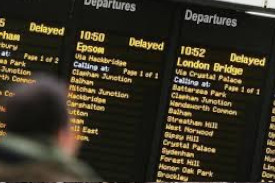

If rail disruption caused you to arrive late, miss a connection, or pay extra out of pocket, Quaerens can help you check your claim and start your compensation route for free.
Delay claims
Check whether a delayed arrival could justify compensation or a partial refund.
Cancellation issues
Support for cancelled trains, missed onward travel, and disrupted journeys.
Extra costs
Review cases involving taxis, replacement tickets, hotels, or other unexpected expenses.
Free claim route
Use the calculator and move straight into your free claim form.
Situation
If your train was delayed or cancelled and you arrived late at your destination, you may be entitled to compensation depending on the operator, the delay length, and the type of journey.
Claims may also arise where disruption caused missed connections, stranded travel, overnight stays, taxis, or replacement tickets that you had to pay for yourself.
Common claim triggers include:
If your train arrived significantly late and disrupted your plans, you may be entitled to compensation or a refund depending on the delay and the operator involved.
A cancelled service or serious delay can leave passengers stranded or cause missed onward travel. In many cases, it is worth checking whether compensation or reimbursement is available.
If rail disruption led to extra expenses such as taxis, hotels, or replacement tickets, you may have grounds to seek reimbursement or raise a complaint.
How it works
Choose the region, ticket value, and the delay length to get a quick indication.
Use the calculator below to see whether your delay could justify compensation.
If your journey looks eligible, continue to the claim form and take the next step.
What counts as a train delay claim?
Enter your journey details to check whether you may be entitled to compensation.
Estimated Compensation
£0
This is a broad estimate based on common delay compensation patterns. Actual entitlement depends on the operator, the ticket, and the circumstances of the disruption.
Start Free ClaimQuick guide
| Delay Length | Typical Outcome | Notes |
|---|---|---|
| 30–59 minutes | Often around 25% refund | Common Delay Repay / EU threshold |
| 60–119 minutes | Often around 50% refund | May vary by operator and ticket type |
| 120+ minutes | Often stronger refund position | Long disruptions can also raise support cost issues |
Some disruption cases may also involve reimbursement for meals, hotels, or replacement transport where appropriate.
If delays cost you time or money, it may be worth checking whether compensation or reimbursement should have been offered.
Start Your Free ClaimWhy choose Quaerens
No upfront fees, no commission, and a straightforward way to begin checking your delay claim.
A quick form helps you move from estimate to action without unnecessary complexity.
Useful for both domestic rail delay cases and broader European rail disruption issues.
Understand whether your case may be worth pursuing before spending more time on it.
Frequently asked questions
“My journey was delayed for hours and I did not realise I might be able to recover anything. This gave me a clear place to start.”
— Passenger, Manchester
“A missed connection turned a simple trip into a much bigger disruption. The process here made the next step feel much easier.”
— Passenger, Paris
“We ended up paying for extra travel and overnight costs after rail disruption. It was helpful to check what might be recoverable.”
— Passengers, Rotterdam
Take the next step
Find out whether your delayed or cancelled train journey may justify compensation or reimbursement. It only takes a moment to begin.
Start Free Claim